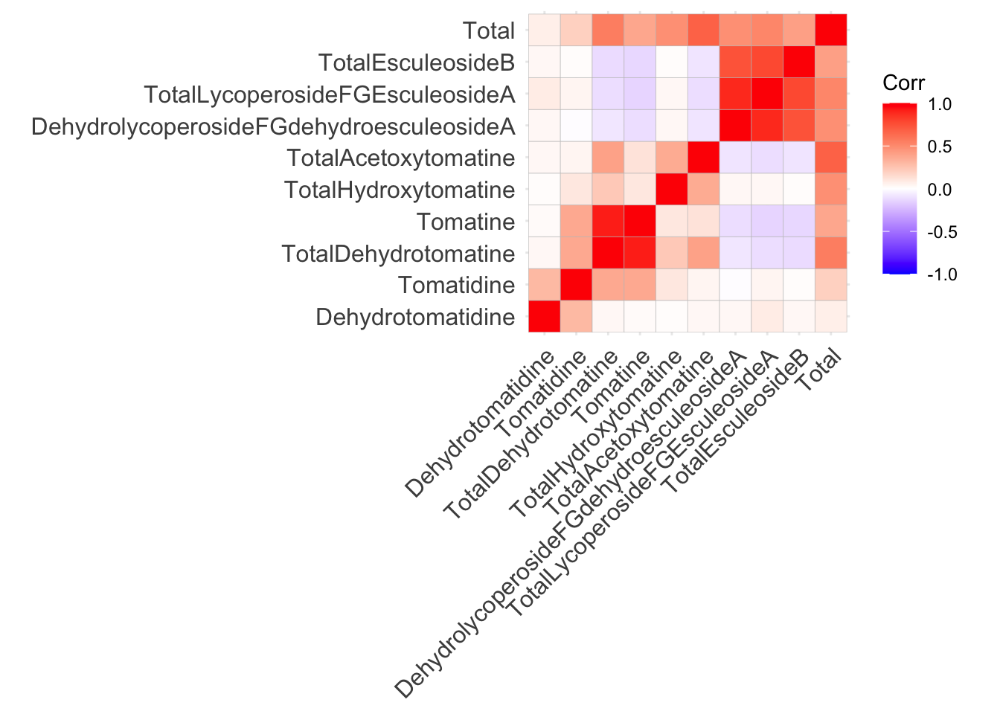
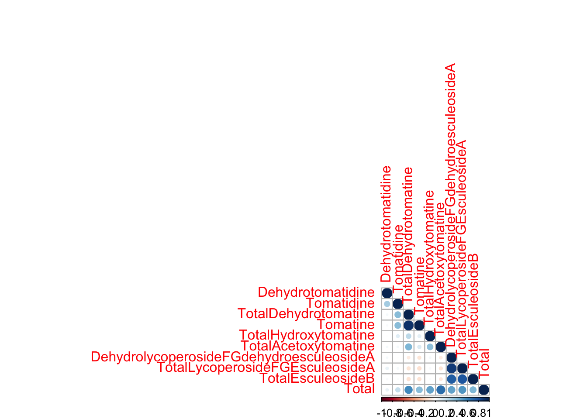
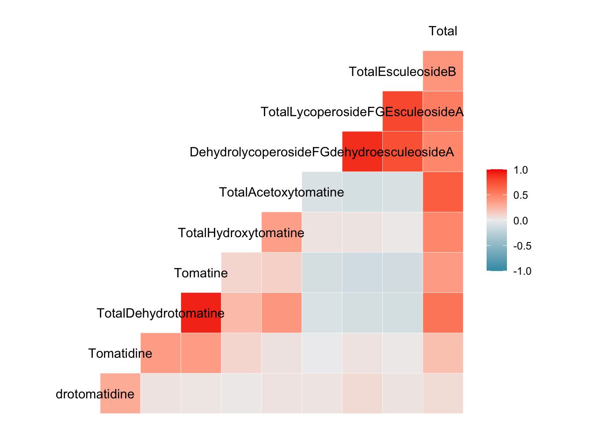
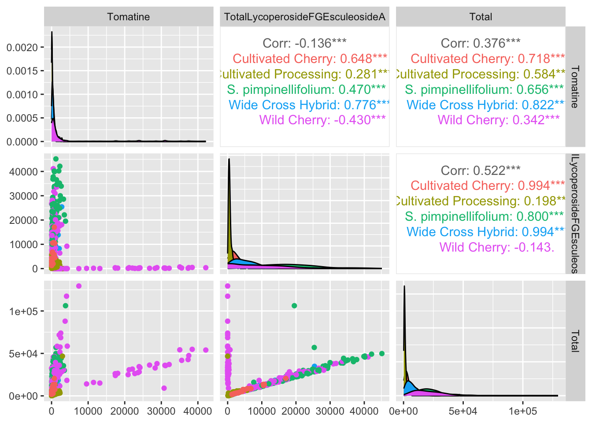
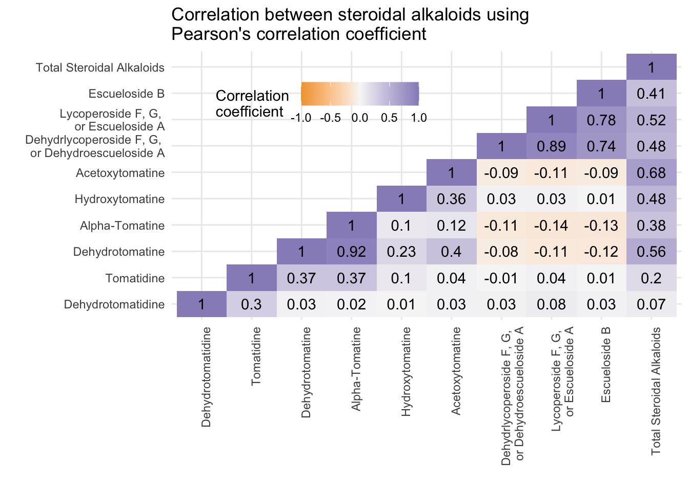

Visualizing Correlations
Week 8
Introduction
We will will building on our lessons on ggplot101 and ggplot102 which focused on an overall understanding of the grammar of graphics, basic syntax, adding data, aesthetic mappings, geoms, facets, scales, labels, and themes. Today we are going to apply what we learned towards trying to better understanding and visualize correlations within our data. To do this we will also use some ggplot extension packages.
Load libraries and data
Before we get started, let’s load our libraries.
library(tidyverse)Today we are going to continue to use the same real research data from my group from last week. We will be reading in the supplementary data from a paper written by Michael Dzakovich, and published in The Plant Genome. The data is present in a Excel worksheet, so we will use the function read_excel() from the tidyverse (but not core tidyverse) package readxl. We want to import Supplemental Table 1. You can indicate which sheet you want to import in the arguments to read_excel().
alkaloids <- readxl::read_excel("tpg220192-sup-0002-supmat.xlsx",
sheet = "S1 Raw Data Diversity Panel")knitr::kable(head(alkaloids))| ID | Year | Environment | Block | Genotype | Plot_Source | Class | Origin | Provence | Blanca_Cluster1 | Blanca_Cluster2 | Passport_Species | Passport_Classification | Sim_Grouping | Latitude | Longitude | Dehydrotomatidine | Tomatidine | Dehydrotomatine1 | Dehydrotomatine2 | TotalDehydrotomatine | Tomatine | Hydroxytomatine1 | Hydroxytomatine2 | Hydroxytomatine3 | Hydroxytomatine4 | TotalHydroxytomatine | Acetoxytomatine1 | Acetoxytomatine2 | Acetoxytomatine3 | TotalAcetoxytomatine | DehydrolycoperosideFGdehydroesculeosideA | LycoperosideFGEsculeosideA1 | LycoperosideFGEsculeosideA2 | TotalLycoperosideFGEsculeosideA | EsculeosideB1 | EsculeosideB2 | EsculeosideB3 | TotalEsculeosideB | Total |
|---|---|---|---|---|---|---|---|---|---|---|---|---|---|---|---|---|---|---|---|---|---|---|---|---|---|---|---|---|---|---|---|---|---|---|---|---|---|---|---|
| 7805 | 2018 | FreEarly18 | 1 | CULBPT_05_11 | 2K17-7724 | Cultivated Processing | USA | NY | SLL_processing_2 | SLL_processing_2 | SLL | SLL_processing_NY | Arid | 40.712800000000001 | -74.006 | 0.000000 | 0.000000 | 5.726010 | 0.350331 | 6.076341 | 172.66244 | 1.079190 | 86.72742 | 17.831892 | 9.142607 | 114.78111 | 18.902399 | 56.307182 | 1.890053 | 77.099634 | 5.125904 | 10.277325 | 336.8893 | 347.1666 | 3.787979 | 0.924195 | 3.943230 | 8.655404 | 731.5675 |
| 7898 | 2017 | Fre17 | 2 | CULBPT_05_11 | 2K9-8584 | Cultivated Processing | USA | NY | SLL_processing_2 | SLL_processing_2 | SLL | SLL_processing_NY | Arid | 40.712800000000001 | -74.006 | 0.000000 | 0.169068 | 0.000000 | 0.000000 | 0.000000 | 55.47329 | 0.000000 | 53.32292 | 13.630697 | 4.841762 | 71.79538 | 3.557348 | 4.107289 | 0.000000 | 7.664637 | 2.905500 | 5.548102 | 199.6694 | 205.2175 | 8.978931 | 1.897850 | 6.794690 | 17.671471 | 360.8969 |
| 7523 | 2018 | FreLate18 | 2 | CULBPT_05_11 | 2K17-7724 | Cultivated Processing | USA | NY | SLL_processing_2 | SLL_processing_2 | SLL | SLL_processing_NY | Arid | 40.712800000000001 | -74.006 | 0.135675 | 0.680554 | 5.073552 | 0.000000 | 5.073552 | 123.85835 | 0.000000 | 50.90989 | 6.503939 | 1.368847 | 58.78268 | 3.931461 | 4.123222 | 0.623340 | 8.678023 | 2.185082 | 5.104115 | 259.0177 | 264.1218 | 4.049145 | 0.000000 | 6.749386 | 10.798531 | 474.3143 |
| 7724 | 2017 | Fre17 | 1 | CULBPT_05_11 | 2K9-8584 | Cultivated Processing | USA | NY | SLL_processing_2 | SLL_processing_2 | SLL | SLL_processing_NY | Arid | 40.712800000000001 | -74.006 | 0.054300 | 0.497261 | 19.419087 | 0.000000 | 19.419087 | 239.01264 | 0.000000 | 36.02318 | 8.557673 | 7.483933 | 52.06478 | 3.341048 | 16.415426 | 1.057100 | 20.813574 | 0.000000 | 0.000000 | 203.0061 | 203.0061 | 1.678210 | 0.000000 | 2.349633 | 4.027843 | 538.8955 |
| 7427 | 2018 | FreLate18 | 1 | CULBPT_05_11 | 2K17-7724 | Cultivated Processing | USA | NY | SLL_processing_2 | SLL_processing_2 | SLL | SLL_processing_NY | Arid | 40.712800000000001 | -74.006 | 0.139454 | 0.553801 | 0.000000 | 0.000000 | 0.000000 | 64.31783 | 0.879435 | 39.91027 | 7.228388 | 3.015298 | 51.03339 | 0.000000 | 3.131685 | 0.000000 | 3.131685 | 0.000000 | 4.054211 | 299.5687 | 303.6229 | 10.146857 | 0.000000 | 4.882339 | 15.029197 | 437.8283 |
| 7854 | 2018 | FreEarly18 | 2 | CULBPT_05_11 | 2K17-7724 | Cultivated Processing | USA | NY | SLL_processing_2 | SLL_processing_2 | SLL | SLL_processing_NY | Arid | 40.712800000000001 | -74.006 | 0.049700 | 0.262174 | 3.737579 | 0.000000 | 3.737579 | 68.44913 | 0.000000 | 23.86864 | 13.506299 | 1.456982 | 38.83192 | 4.657902 | 4.259007 | 0.605729 | 9.522638 | 9.832149 | 11.595595 | 459.5205 | 471.1161 | 6.839930 | 0.486236 | 5.595751 | 12.921917 | 614.7233 |
This dataset has 605 observations, with data about different steroidal alkaloids in the fruits of different tomato germplasm grown in 3 locations across 2 years. There is also some other metadata too.
For those who are chemistry minded, here is a little pathway context for the compounds we are investigating today.

Scatterplots
A very simple first pass way to understand if you have relationships within your data is to make scatterplots of the variables you think might be correlated. Let’s start by investigating how the different alkaloid concentrations are correlated to each other. First we will see how alpha-tomatine content (Tomatine) is related to total steroidal alkaloid content (Total).
alkaloids %>%
ggplot(aes(x = Total, y = Tomatine)) +
geom_point() +
labs(x = "Total Steroidal Alkaloids (µg/100 g)",
y = "Alpha-Tomatine (µg/100 g)")
It seems like there are two separate groups here - the points with a steeper slope, and the points with a less steep slope. We can color our points based on what Class of tomato the data comes from, maybe that will reveal something. In the meanwhile let’s make this plot look a bit nicer. The package scales has some nice functions that help you control the scaling of your plots, in this case, making each of the axes have numbers in comma_format(). I also am using the hex codes for a color-blind friendly qualitative color scheme developed by Paul Tol.
library(scales)
Attaching package: 'scales'The following object is masked from 'package:purrr':
discardThe following object is masked from 'package:readr':
col_factoralkaloids %>%
ggplot(aes(x = Total, y = Tomatine, color = Class)) +
geom_point(alpha = 0.8) +
scale_x_continuous(labels = comma_format(big.mark = ",")) + # requires the package scales
scale_y_continuous(labels = comma_format(big.mark = ",")) + # requires the package scales
scale_color_manual(values = c("#4477AA", "#EE6677", "#228833", "#CCBB44", "#66CCEE")) +
theme_minimal() +
labs(x = "Total Steroidal Alkaloids (µg/100 g fresh weight)",
y = "Alpha-Tomatine (µg/100 g fresh weight)",
title = "Relationship between Alpha-Tomatine and Total Steroidal Alkaloids \nAcross Different Germplasm in the Red Tomato Clade")
All of the tomatoes in the two extremes of this plot are from the Class Wild Cherry. What would this look like if we removed these fruits? Note, I adjusted the color scale to remove the hex code associated with Wild Cherry but keeping the other colors the same.
alkaloids %>%
filter(Class != "Wild Cherry") %>%
ggplot(aes(x = Total, y = Tomatine, color = Class)) +
geom_point() +
scale_x_continuous(labels = comma_format(big.mark = ",")) + # requires the package scales
scale_y_continuous(labels = comma_format(big.mark = ",")) + # requires the package scales
scale_color_manual(values = c("#4477AA", "#EE6677", "#228833", "#CCBB44")) +
theme_minimal() +
labs(x = "Total Steroidal Alkaloids (µg/100 g fresh weight)",
y = "Alpha-Tomatine (µg/100 g fresh weight)",
title = "Relationship between Alpha-Tomatine and Total Steroidal Alkaloids \nAcross Different Germplasm in the Red Tomato Clade")
Adding geom_smooth()
alkaloids %>%
ggplot(aes(x = Total, y = Tomatine, color = Class)) +
geom_point(alpha = 0.8) +
geom_smooth(method = "lm") +
scale_x_continuous(labels = comma_format(big.mark = ",")) + # requires the package scales
scale_y_continuous(labels = comma_format(big.mark = ",")) + # requires the package scales
scale_color_manual(values = c("#4477AA", "#EE6677", "#228833", "#CCBB44", "#66CCEE")) +
theme_minimal() +
labs(x = "Total Steroidal Alkaloids (µg/100 g fresh weight)",
y = "Alpha-Tomatine (µg/100 g fresh weight)",
title = "Relationship between Alpha-Tomatine and Total Steroidal Alkaloids \nAcross Different Germplasm in the Red Tomato Clade")`geom_smooth()` using formula = 'y ~ x'
Faceted scatterplots
We may be able to see trends by tomato class more easily if we facet our scatterplots. I also am demonstrating here how within the ggplot function you can make alter the aesthetics you plot - here I am turning data that is present as µg/100 g to mg/100 g by dividing by 1000 and changing the axis labels accordingly.
alkaloids %>%
ggplot(aes(x = Total/1000, y = Tomatine/1000, color = Class)) +
geom_point(alpha = 0.8) +
scale_color_manual(values = c("#4477AA", "#EE6677", "#228833", "#CCBB44", "#66CCEE")) +
facet_wrap(vars(Class), scales = "free") +
theme_minimal() +
theme(legend.position = "none") +
labs(x = "Total Steroidal Alkaloids (mg/100 g fresh weight)",
y = "Alpha-Tomatine (mg/100 g fresh weight)",
title = "Relationship between Alpha-Tomatine and Total Steroidal Alkaloids \nAcross Different Germplasm in the Red Tomato Clade")
Correlation matrix with cor()
cor() is a function from base R that will allow you to create a correlation matrix.
Before we use cor() we will clean up our dataset to include only the variables we want to correlate.
colnames(alkaloids) [1] "ID"
[2] "Year"
[3] "Environment"
[4] "Block"
[5] "Genotype"
[6] "Plot_Source"
[7] "Class"
[8] "Origin"
[9] "Provence"
[10] "Blanca_Cluster1"
[11] "Blanca_Cluster2"
[12] "Passport_Species"
[13] "Passport_Classification"
[14] "Sim_Grouping"
[15] "Latitude"
[16] "Longitude"
[17] "Dehydrotomatidine"
[18] "Tomatidine"
[19] "Dehydrotomatine1"
[20] "Dehydrotomatine2"
[21] "TotalDehydrotomatine"
[22] "Tomatine"
[23] "Hydroxytomatine1"
[24] "Hydroxytomatine2"
[25] "Hydroxytomatine3"
[26] "Hydroxytomatine4"
[27] "TotalHydroxytomatine"
[28] "Acetoxytomatine1"
[29] "Acetoxytomatine2"
[30] "Acetoxytomatine3"
[31] "TotalAcetoxytomatine"
[32] "DehydrolycoperosideFGdehydroesculeosideA"
[33] "LycoperosideFGEsculeosideA1"
[34] "LycoperosideFGEsculeosideA2"
[35] "TotalLycoperosideFGEsculeosideA"
[36] "EsculeosideB1"
[37] "EsculeosideB2"
[38] "EsculeosideB3"
[39] "TotalEsculeosideB"
[40] "Total" From looking at the colnames and reading the supplemental information, we can see that some columns are composites of others. For example, the column TotalAcetoxytomatine = Acetoxytomatine1 + Acetoxytomatine2 + Acetoxytomatine3. So we want to pull only the columns that represent the total for any given alkaloids. There should be 10 columns.
# create a vector of the names we want to keep
alkaloid_total_names <- c("Dehydrotomatidine",
"Tomatidine",
"TotalDehydrotomatine",
"Tomatine",
"TotalHydroxytomatine",
"TotalAcetoxytomatine",
"DehydrolycoperosideFGdehydroesculeosideA",
"TotalLycoperosideFGEsculeosideA",
"TotalEsculeosideB",
"Total")
# make a new df including some metadata and the alkaloid_total_names
alkaloids_totals <- alkaloids %>%
select(ID, Year, Environment, Block, Genotype, Class, all_of(alkaloid_total_names))
# did it work? look at colnames()
colnames(alkaloids_totals) [1] "ID"
[2] "Year"
[3] "Environment"
[4] "Block"
[5] "Genotype"
[6] "Class"
[7] "Dehydrotomatidine"
[8] "Tomatidine"
[9] "TotalDehydrotomatine"
[10] "Tomatine"
[11] "TotalHydroxytomatine"
[12] "TotalAcetoxytomatine"
[13] "DehydrolycoperosideFGdehydroesculeosideA"
[14] "TotalLycoperosideFGEsculeosideA"
[15] "TotalEsculeosideB"
[16] "Total" Now we can create a correlation matrix to see how each of our 10 alkaloids is correlated to the concentration of each other alkaloid (including the compile metric of Total which sums all the alkaloids). The default for cor() is to use Pearson’s correlation coefficient, but you can set to use Spearman method = "spearman" or Kendall method = "kendall" if you prefer. Check the documentation for cor() for more information.
alkaloids_cor <- alkaloids_totals %>%
select(all_of(alkaloid_total_names)) %>%
cor()
# look at our correlation matrix
knitr::kable(alkaloids_cor) # kable makes a nicely formatted table| Dehydrotomatidine | Tomatidine | TotalDehydrotomatine | Tomatine | TotalHydroxytomatine | TotalAcetoxytomatine | DehydrolycoperosideFGdehydroesculeosideA | TotalLycoperosideFGEsculeosideA | TotalEsculeosideB | Total | |
|---|---|---|---|---|---|---|---|---|---|---|
| Dehydrotomatidine | 1.0000000 | 0.2974462 | 0.0324918 | 0.0238230 | 0.0099126 | 0.0322029 | 0.0305049 | 0.0761907 | 0.0282219 | 0.0708252 |
| Tomatidine | 0.2974462 | 1.0000000 | 0.3744672 | 0.3736949 | 0.1003558 | 0.0382981 | -0.0059964 | 0.0373649 | 0.0126724 | 0.2044979 |
| TotalDehydrotomatine | 0.0324918 | 0.3744672 | 1.0000000 | 0.9214859 | 0.2290192 | 0.4011257 | -0.0820469 | -0.1149682 | -0.1217560 | 0.5636969 |
| Tomatine | 0.0238230 | 0.3736949 | 0.9214859 | 1.0000000 | 0.0995212 | 0.1220596 | -0.1140360 | -0.1357819 | -0.1260377 | 0.3756155 |
| TotalHydroxytomatine | 0.0099126 | 0.1003558 | 0.2290192 | 0.0995212 | 1.0000000 | 0.3563506 | 0.0330078 | 0.0284887 | 0.0134806 | 0.4774036 |
| TotalAcetoxytomatine | 0.0322029 | 0.0382981 | 0.4011257 | 0.1220596 | 0.3563506 | 1.0000000 | -0.0865506 | -0.1106212 | -0.0947254 | 0.6782337 |
| DehydrolycoperosideFGdehydroesculeosideA | 0.0305049 | -0.0059964 | -0.0820469 | -0.1140360 | 0.0330078 | -0.0865506 | 1.0000000 | 0.8862982 | 0.7401116 | 0.4792108 |
| TotalLycoperosideFGEsculeosideA | 0.0761907 | 0.0373649 | -0.1149682 | -0.1357819 | 0.0284887 | -0.1106212 | 0.8862982 | 1.0000000 | 0.7779405 | 0.5222751 |
| TotalEsculeosideB | 0.0282219 | 0.0126724 | -0.1217560 | -0.1260377 | 0.0134806 | -0.0947254 | 0.7401116 | 0.7779405 | 1.0000000 | 0.4059824 |
| Total | 0.0708252 | 0.2044979 | 0.5636969 | 0.3756155 | 0.4774036 | 0.6782337 | 0.4792108 | 0.5222751 | 0.4059824 | 1.0000000 |
Note the diagonal is all composed of 1s. This makes sense because the correlation of each alkaloid with itself is 1.
Using ggcorrplot() from ggcorrplot
Use the function ggcorrplot() without any additional arguments besides the correlation matrix alkaloids_cor. In general, I think if you want to make a bunch of correlation plots quickly, and don’t intend to publish them, `ggcorrplot() works well, but the visuals of the plot are quite difficult to customize.
library(ggcorrplot)
ggcorrplot(alkaloids_cor)
This is not a perfect plot but its a good starting point. Correlation matrices are inherently symmetric, meaning if we display only the top or bottom triangle, we do not lose any information. We will work on editing this plot in different ways to show more information and make it more beautiful.
We could also make the plot circles instead of squares at the same time.
ggcorrplot(alkaloids_cor,
method = "circle",
type = "lower")
In general, I think if you want to make a bunch of correlation plots quickly, and don’t intend to publish them, `ggcorrplot() works well, but the visuals of the plot are quite difficult to customize.
Using corrplot() from corrplot
Similarly, you can use a base R plotting based package corrplot() to make correlation plots. The customization syntax here is quite different from what we’ve been working with in ggplot, but I wanted you to feel familiar with some base R tools.
library(corrplot)corrplot 0.95 loadedcorrplot(alkaloids_cor, type = "lower")
I have used corrplot() in publications before and felt like I couldn’t customize the plots as much as I wanted. In the process of putting together this content, I learned some news ways to customize these plots that are actually very nice. Here are some parameters you can modify in R. You can also order your variables by hierarchical clustering.
First we will start (as we always do) by wrangling.
# create matrix for correlation
alkaloids_to_cor <- alkaloids_totals %>%
select(all_of(alkaloid_total_names)) %>%
as.matrix() # rcorr() needs a matrix
library(Hmisc) # does cor() but also computes significance levels
Attaching package: 'Hmisc'The following objects are masked from 'package:dplyr':
src, summarizeThe following objects are masked from 'package:base':
format.pval, units# create a matrix of pvalues for the correlations
alkaloids_rcorr = rcorr(alkaloids_to_cor, type = "pearson")
# create a vector of the alkaloid names for labeling
alkaloid_labels <- c("Dehydrotomatidine",
"Tomatidine",
"Dehydrotomatine",
"Alpha-Tomatine",
"Hydroxytomatine",
"Acetoxytomatine",
"Dehydrlycoperoside F, G, \nor Dehydroescueloside A",
"Lycoperoside F, G, \nor Escueloside A",
"Escueloside B",
"Total Steroidal Alkaloids")
# change row and column names of the correlation matrix
# so they are how we want them to be plotted
colnames(alkaloids_rcorr$r) <- alkaloid_labels
rownames(alkaloids_rcorr$r) <- alkaloid_labels
# change row and column names of the pvalue matrix
# so they are how we want them to be plotted
colnames(alkaloids_rcorr$P) <- alkaloid_labels
rownames(alkaloids_rcorr$P) <- alkaloid_labelsNow we are ready to plot
corrplot(alkaloids_rcorr$r, # the correlation matrix
type = "lower", # lower triangle
tl.col = "black", # axis labels are black
p.mat = alkaloids_rcorr$P, # pvalue matrix
sig.level = 0.05, # how sig does a cor need to be to be included
insig = "blank", # do not display insignificant correlations
addCoef.col = "black", # display correlations in black
diag = FALSE, # don't show the diagonal (because this is all 1)
number.cex = 0.6) # size of correlation font
GGally
ggcorr()
Another ggplot extension package ggally has the function ggcorr() which also allows the creation of correlation plots, but ones that are more easily customizable. ggcorr() objects are moderately customizable. They make work for some of you so I’m sharing how to make them.
Note, GGally::ggcorr() does not take a correlation matrix, but instead takes the data you want to make a correlation matrix for. You can specific the method of correlation in the arguments. The default is Pearson’s correlation.
library(GGally)
to_corr <- alkaloids_totals %>%
select(all_of(alkaloid_total_names))
ggcorr(to_corr)
There is only one labeled axis - this is because there is no diagonal in these plots, like we saw with ggcorrplot() and corrplot().
We can now spend some time improving the aesthetics of our plot.
ggcorr(to_corr, # data for correlation
low = "#f1a340", # -1 correlation color
mid = "#f7f7f7", # 0 correlation color
high = "#998ec3") # 1 correlation color
ggcorr(to_corr,
low = "#f1a340", mid = "#f7f7f7", high = "#998ec3",
geom = "circle",
label = TRUE,
label_size = 2,
label_round = 2,
layout.exp = 3)
For this example, we have very long label names which are really difficult to wrap, but if your labels are more reasonable this may work well for you.
ggpairs()
We can also use the function GGally::ggpairs() to make a matrix of correlation related plots.
alkaloids_totals %>%
ggpairs(columns = c("Tomatine", "TotalLycoperosideFGEsculeosideA", "Total"), # pick variables
aes(color = Class))
Let’s customized a bit.
# remove zeroes since they don't log transform
# make log transformed columns
alkaloids_totals_log <- alkaloids_totals %>%
filter(Tomatine != 0,
TotalLycoperosideFGEsculeosideA != 0,
Total != 0) %>%
mutate(log10_tomatine = log10(Tomatine),
log10_FGA = log10(TotalLycoperosideFGEsculeosideA),
log10_total = log10(Total))
alkaloids_totals_log %>%
ggpairs(columns = c("log10_tomatine", "log10_FGA", "log10_total"),
aes(color = Class, alpha = 0.5), # note alpha inside aes which is weird idk why
columnLabels = c("Alpha-Tomatine", "Lycoperoside F/G\n Escueloside A", "Total Alkaloids"))
Manually making correlation plots with reshape::melt() and ggplot
Because some of the correlation specific packages are hard to customize, I am going to show you how to make your own plots by reshaping your data with reshape2::melt() and some base R functions, and plotting using the standard ggplot syntax.
library(reshape2) # contains melt()
Attaching package: 'reshape2'The following object is masked from 'package:tidyr':
smiths# take cor matrix and convert to df with 3 columns: Var1, Var2, and value
melted_alkaloids_cor <- melt(alkaloids_cor)
# what does it look like?
head(melted_alkaloids_cor) Var1 Var2 value
1 Dehydrotomatidine Dehydrotomatidine 1.000000000
2 Tomatidine Dehydrotomatidine 0.297446153
3 TotalDehydrotomatine Dehydrotomatidine 0.032491778
4 Tomatine Dehydrotomatidine 0.023823011
5 TotalHydroxytomatine Dehydrotomatidine 0.009912624
6 TotalAcetoxytomatine Dehydrotomatidine 0.032202892First pass minimalist plotting
melted_alkaloids_cor %>%
ggplot(aes(x = Var1, y = Var2, fill = value)) +
geom_tile()
Lots to fix! What if we want only the upper or lower triangle, again since this plot is symmetric.
Upper triangle
Keep only the upper triangle.
# "save as"
alkaloids_upper <- alkaloids_cor
# use function lower.tri() and set the lower triangle all to NA
# then we can keep only the upper triangle
alkaloids_upper[lower.tri(alkaloids_upper)] <- NA
# melt to go back to long format
melted_alkaloids_upper <- melt(alkaloids_upper, na.rm = TRUE)
# did it work?
head(melted_alkaloids_upper) # yup Var1 Var2 value
1 Dehydrotomatidine Dehydrotomatidine 1.00000000
11 Dehydrotomatidine Tomatidine 0.29744615
12 Tomatidine Tomatidine 1.00000000
21 Dehydrotomatidine TotalDehydrotomatine 0.03249178
22 Tomatidine TotalDehydrotomatine 0.37446722
23 TotalDehydrotomatine TotalDehydrotomatine 1.00000000Lower triangle
Create a lower triangle object to plot.
# "save as"
alkaloids_lower <- alkaloids_cor
# use function upper.tri() and set the upper triangle all to NA
# then we can keep only the lower triangle
alkaloids_lower[upper.tri(alkaloids_lower)] <- NA
# melt to go back to long format
melted_alkaloids_lower <- melt(alkaloids_lower, na.rm = TRUE)
# did it work?
head(melted_alkaloids_lower) # yup Var1 Var2 value
1 Dehydrotomatidine Dehydrotomatidine 1.000000000
2 Tomatidine Dehydrotomatidine 0.297446153
3 TotalDehydrotomatine Dehydrotomatidine 0.032491778
4 Tomatine Dehydrotomatidine 0.023823011
5 TotalHydroxytomatine Dehydrotomatidine 0.009912624
6 TotalAcetoxytomatine Dehydrotomatidine 0.032202892Plot
# remember we made alkaloid_labels
print(alkaloid_labels) [1] "Dehydrotomatidine"
[2] "Tomatidine"
[3] "Dehydrotomatine"
[4] "Alpha-Tomatine"
[5] "Hydroxytomatine"
[6] "Acetoxytomatine"
[7] "Dehydrlycoperoside F, G, \nor Dehydroescueloside A"
[8] "Lycoperoside F, G, \nor Escueloside A"
[9] "Escueloside B"
[10] "Total Steroidal Alkaloids" melted_alkaloids_lower %>%
ggplot(aes(x = Var1, y = Var2, fill = value)) +
geom_tile() +
geom_text(aes(label = round(value, 2)), color = "black") +
scale_fill_gradient2(low = "#f1a340",
mid = "#f7f7f7",
high = "#998ec3",
limits = c(-1, 1)) +
scale_x_discrete(labels = alkaloid_labels) +
scale_y_discrete(labels = alkaloid_labels) +
theme_minimal() +
theme(axis.text.x = element_text(angle = 90, hjust = 1),
legend.justification = c(1, 0),
legend.position = c(0.5, 0.7),
legend.direction = "horizontal") +
labs(fill = "Correlation \ncoefficient",
x = "",
y ="",
title = "Correlation between steroidal alkaloids using \nPearson's correlation coefficient")Warning: A numeric `legend.position` argument in `theme()` was deprecated in ggplot2
3.5.0.
ℹ Please use the `legend.position.inside` argument of `theme()` instead.